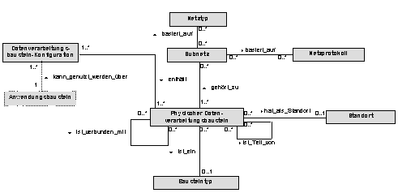
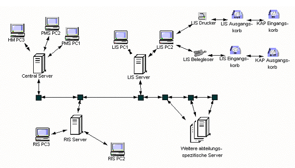

Die physische Werkzeugebene besteht aus einer Menge von physischen Datenverarbeitungsbausteinen. Ein physischer Datenverarbeitungsbaustein eines Krankenhausinformationssystems ist entweder
Die physischen Datenverarbeitungsbausteine können über Datenübertragungsverbindungen miteinander kommunizieren. Zwischen rechnerbasierten physischen Datenverarbeitungsbausteinen sind dies typischerweise Datenkabel. Betrachtet man allerdings Funknetze, sind diese Datenübertragungsverbindungen lediglich virtueller Art (also nicht greifbar) und lediglich durch die beiden Knoten zwischen denen sie besteht definiert. Ähnliches gilt auch für Datenübertragungsverbindungen zwischen nicht rechnerbasierten Datenverarbeitungsbausteinen.
Die Konstellation dieser Datenübertragungsverbindungen für zu physischen Netzwerken, die auf Netzprotokollen basieren. Subnetze können definiert werden als Projektion auf das gesamte Netzwerk. Es ist zu beachten, dass auf der physischen Werkzeugebene sowohl 'echte' physische Netzwerke beschrieben werden können, die lediglich die bestehenden Datenverarbeitungsbausteine und ihre Datenübertragungsverbindungen darstellen, als auch 'logische Netzwerke', die berücksichtigen, dass bestimmte Datenverarbeitungsbausteine auch zu bestimmten Zonen gehören, in denen bestimmte Zugriffsrechte vergeben sind.
Die physische Werkzeugebene stellt also die physischen Werkzeuge bereit, die für den Betrieb von Anwendungsbausteinen erforderlich sind. Physische Datenverarbeitungsbausteine lassen sich ggf. wiederum in physische Datenverarbeitungsbausteine gliedern.
Insbesondere Rechnersysteme können z B. durch folgende Attribute der Klasse 'Physische Datenverarbeitungsbausteine näher beschrieben werden (diese sind im UML-Klassendiagramm nicht dargestellt):

Anmerkung: Das Meta-Modell der physischen Werkzeugebene ist wesentlich offener gestaltet, d. h. es steckt inhaltlich wesentlich weniger drin als im Meta-Modell der logischen Werkzeugebene. Während dort z.B. Schnittstellen explizit modelliert sind, können Schnittstellen (z. B: Netzwerkkarten) auf der physischen Werkzeugebene als physischer Datenverarbeitungsbaustein modelliert werden, der wiederum Teil eines Rechnersystems ist.
Anmerkung: Bei konventionellen Datenverarbeitungsbausteinen kann man unter dem Betriebssystem die intellektuellen Fähigkeiten der beteiligten Personen verstehen. So sind beispielsweise bei einem Krankenaktenarchiv neben den Räumen und Regalanlagen Menschen notwendig, die grundlegende Kulturtechniken wie Ordnung halten, freundlicher Umgang mit Kunden und Mitarbeitern etc. beherrschen. Nur auf dieser Grundlage kann mit Hilfe eines Organisationsplans und den Anweisungen einer Leitung ein funktionierendes Archiv als nicht-rechnerbasierter Anwendungsbaustein realisiert werden.
Abb. 2 zeigt ein Beispiel einer physischen Werkzeugebene. In diesem Beispiel gibt es je einen Server für die verschiedenen Anwendungsbausteine der Funktionsabteilungen (einen LIS Server, einen RIS Server und die Server für die nicht weiter spezifizierten Anwendungsbaustein und einen zentralen Server, auf dem das PVS und das Krankenhausverwaltungssystem installiert sind. Jeder Server ist verbunden mit einigen PCs. Die schwarzen Punkte repräsentieren Netzwerkkomponenten, über die die Server miteinander verbunden sind und damit das Gesamtnetzwerk bilden. Die Datenübertragung vom und zum paper-basierten Teil das KIS wird hier lediglich am Beispiel der LIS dargestellt. Eine Laboranforderung (als Dokument) geht über den Postausgangskorb des klinischen Arbeitsplatzes zum Posteingangskorb des Labors und wird von einem Formularleser eingelesen. Das Ergebnis (also der Befund) wird ausgedruckt und geht wiederum über den Ausgangskorb des Labors zum Eingangskorb des klinischen Arbeitsplatzes. In diesem Beispiel sind keine Subnetze spezifiziert und es werden keine Informationen über den Netztyp, das Netzprotokoll oder den Standort dargestellt.
